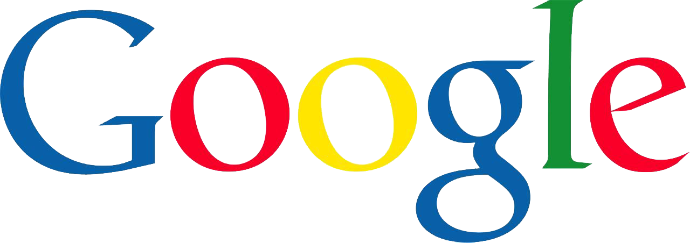
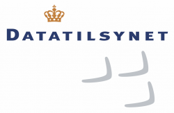
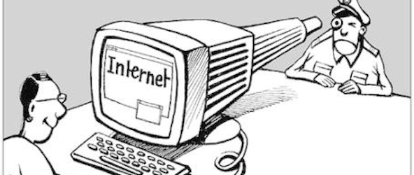
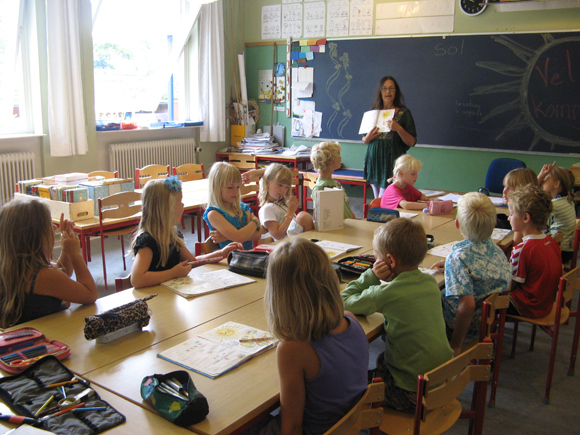
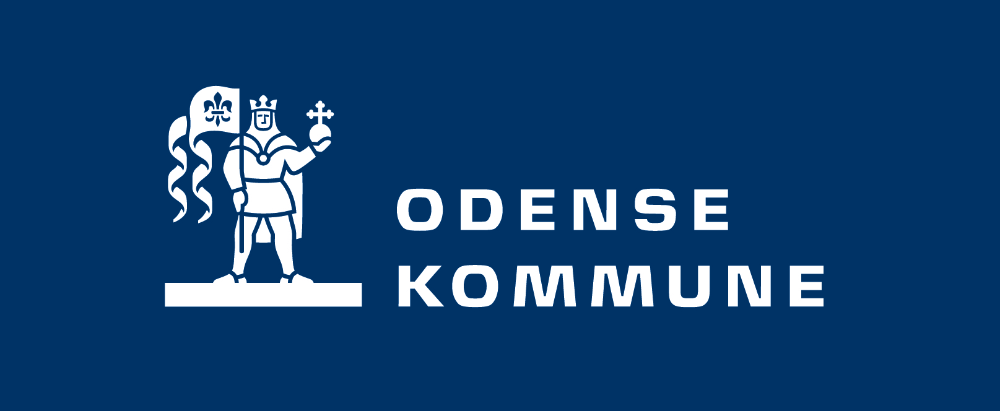

Forside

Portfolio-sitet
(Ingen tekst er endelig)
Mit portfolio-site er bygget meget simpelt op. Jeg har min menu, som ikke er links til undersider, men er Javascript, som bytter nogle elementer ud med hinanden.
Jeg mener at det er bedst at bruge, fordi det mindsker tiden for at loade nyt content på et site som det her, og mængden af plads mine filer bruger er mindre.
Jeg har mine underfaner, som er nemme at komme til, og det er nemt at læse min information på siden.
Wireframe til sitet

Mit wireframe til sitet (normal web til venstre, lille skærm/smartphone til højre) er ikke særlig advanceret. Man scroller igennem hovedblokken af indhold, mens man har en menu på venstre side til hurtigt at springe videre til andet indhold.
Smartphone-designet er lavet på samme måde i forhold til den store blok, men menuen sidder nu toppen, og er "drop-down".
Link til Moqups.com ->
Farver og tema

Efter at have siddet i lidt tid i Paletton uden at finde et farvetema som passede til mine ideer, valgte jeg at gå efter et sort/hvid tema i stedet. Jeg følte at overgangen mellem sort og hvid passede meget godt til et site hvor man skal læse meget, så det ikke bliver hårdt for øjnene.
Link til min Paletton.com ->
Nebula
Nebula-site
(Ingen tekst er endelig)
Nebula sitet blev lavet som en opgave til aflevering. Vi fik ikke andet end grupper og nogle instrukser for hvad der skulle være på sitet, og krav til metoderne vi byggede det op på.
Link til Nebula ->
Opgaven
Nebula er et site om astronomi, og er til for at oplyse folk om det ydre rum, og menneskets bedrifter på samme område. Vi blev inddelt i grupper af 4, hvor vi så skulle blive enige om et design og layout af siden. Opgaven var at vi skulle finde et farvetema, og lave et diagram over siden og dens funktioner. Vi blev enige om at farverne skulle have noget med rummet at gøre, og at vi skulle have mange forskellige måder at få informationerne på.
Der blev også hurtigt enighed om wireframes af siden, både til computer, men også til smartphone.

Layout og design

Sitet er lavet med 2 websites. Det første hedder Coggle, som bruges til diagrammer, og det andet Paletton, som er et website til at finde farvekombinationer og hexadecimalerne til dem.
Sitet er lavet i Brackets, med HTML, CSS og lidt Javascript.
Vi byggede forsiden op, så den havde lidt af de andre sider på sitet. Der er relevante links til andre sites om rummet på forsiden, et slideshow af planeterne i vores solsystem og et twitterfeed af en kendt astrofysiker. På undersiderne er der en tidslinje, som man kan scrolle nedad for at læse mere om begivenheder omkring rummet, der er en side hvor man kan få meget at vide om rummet omkring os, månerne, planeterne, solsystemerne og galakserne. Til sidst er der en side hvor man kan kontakte os der har lavet siden, og læse om hvilke genier der har lavet sitet.
Coggle-diagram af Nebula

Det program vi har brugt til diagrammet hedder Coggle, og er et "gratis" program til at lave mindmaps/diagrammer i. På vores Coggle kan man se, at vi har prøvet at bygge siderne op hver for sig, og at vi fået inkluderet en masse gode ideer, selvom vi måske ikke var helt gode nok til javascript for at føre dem ud i livet.
Link til Coggle.it ->
Nebula's farver og tema

Farverne bag Nebula er ret gennemtænkte. Blå signalerer lærdom, og at kontrollere sig. Det gør at det er nemmere at fokusere på den viden, som er på siden. Vi fandt en god blanding af "ydre-rum blå" som vi kunne bruge.
Link til Paletton.com ->
Informationssøgning

Søgemaskiner på nettet
Denne underside handler om søgning af informationer, hvordan søgemaskiner virker og hvordan man selv bedst muligt får sit arbejde ud på nettet.
Hvordan virker søgemaskinerne?
Søgemaskinerne bruger bestemte algoritmer til at læse de websites den finder på nettet. Bagefter uddeler den "points", som skal bruges til at vise hvor god siden er for personen der søger. Det er vigtigt for søgemaskinen at den dækker bredt, og at den tager en masse faktorer med i overvejelserne, så den bedre sikrer sig at man finder det man leder efter. På samme tid må man heller ikke kunne snyde den, ved at udnytte de ting der giver "points".
Hvordan giver Google points?
Søgemaskinen kigger på en række faktorer, og bestemmer bagefter hvor mange points du får. Det kunne være f.eks titlen på dit site, det der står i din overskrift, om du har relevante links, om andre sites linker til dig og om du bruger relevante ord i din tekst. Den holder dog også øje med snyd, så hvis du har skrevet "havebassin" 30 gange i en passage, vil den nok give dig strafpoints.
Hvordan forbedrer du din side?
1: Titel
Det første man skal tænke på er ens titel. Det er ikke kun en af de første ting søgemaskinen ser, men også kunden/den besøgende ser titlen på siden først.
2: H1 overskrift
Google kigger efter en H1 overskrift, og hvis du har, så hvor langt oppe på dit site den står. Den ser også på om din overskrift har relevans til resten af sitet. Det er vigtigt med en overskrift, da Google bruger dem til at matche dit site med søgeord.
3: Relevante ord
Mængden af relevante ord har også stor indflydelse på din placering. Hvis du bruger ordene for lidt, giver den dig minus for ikke at være relevant, og hvis du bruger dem for meget, giver den også minus, fordi den tror du snyder den.
4: Link til og fra dit site
Google tæller mængden af links du har til andre sites. Den kigger på om de links går ud til noget der giver mening, og samtidig kigger den på andre sites, og ser om de linker til dig. Hvis de linker til dig, må dit indhold jo være noget værd. Man kan dog ikke snyde den, da nogle site har mere vægt end andre, f.eks. hvis en populær netavis linker til dig, og et 3-ugers gammelt site, men 10 daglige besøgende.
5: Billeder
Folk kan godt lide billeder, så det er meget godt at dit site har nogle af dem også. Du kan hjælpe google ved at give billedfilerne relevante navne, og ved at bruge "alt" attributen og give dem en god tekst.
6: Linkstruktur
En god navigations bar, med semantiske tags, link og opsætning sætter google også pris på. De vil gerne have den højt på siden (meget gerne helt oppe under loftet) og så skal den linke godt videre til undersiderne på dit website.
Ord og begreber

Der er nogle ord og begreber indenfor SEO som er gode at kende til. Her er 2 af dem:
Pagerank
Pagerank er et gammelt begreb, som sidst blev opdateret i 2013. Det er en samling af de 200+ elementer Google kigger på for at rangere sider. Google har også sider de har straffet, som derfor har 0 pagerank-points.
Pagerank er en skala fra 0 til 10, og kigger på nogle forskellige ting:
1. Antallet af links
2. Alderen på hvert link
3. Om linkene er relevante for det din side omhandler
4. Hvor linkene fysisk er placeret på den side, der linker
5. Hvordan der linkes (titlen og link beskrivelsen)
Pagerank er kun en lille del af det Google bruger til at placere dit website med
Søgeordsanalyse
En søgeordsanalyse skal hjælpe dig til at finde ud af hvilke ord og sætninger du skal have på dit site for at kunne rangere højere på Googles resultater. Den hjælper med at bygge dit site op, så du sikrer dig flere kunder.
Google AdWords

AdWords er et værktøj hvor du kan få dit site i toppen af Googles resultater. Du kan lægge mange former for reklamer op på Googles netværk af apps, og få dem ud til mange forskellige brugere. Du kan lave dem tekstbaserede, grafiske, video-reklamer eller reklamer i apps. Man betaler for hvor mange gange du får bid på din reklame, og ikke bare for at have den der.
Link til AdWords ->
Datalovgivning
Lovgivning om data og informationer
Der findes mange love der skal sørge for at vores arbejde ikke bliver stjålet. Det er så nemt at stjæle fra nettet, at alle kan gøre det. Derfor sørger et par love for, at de ting der ligger på nettet forbliver dine.
Samtidig sørger de også for, at folk ikke må dele dine informationer, så ting som en E-boks bliver muligt.
Persondataloven

Persondataloven er det der beskytter vores private informationer på nettet. Den bliver overholdt af Datatilsynet, som laver undersøgelser hos firmaer og myndighederne. Man kan sende klager man har til dem, som de så vil kigge nærmere på.
§ 3, 2) Behandling:
Enhver operation eller række af operationer med eller uden brug af elektronisk databehandling, som oplysninger gøres til genstand for.
3 steder hvor loven ikke gælder:
§ 2
Stk. 2. Loven finder ikke anvendelse, hvis det vil være i strid med informations- og ytringsfriheden, jf. Den Europæiske Menneskerettighedskonventions artikel 10.
Stk. 3. Loven gælder ikke for behandlinger, som en fysisk person foretager med henblik på udøvelse af aktiviteter af rent privat karakter.
Stk. 5. Loven finder ikke anvendelse på behandling af oplysninger, der foretages for Folketinget og institutioner med tilknytning dertil.
Hvem er den dataansvarlige?
§ 3, 4: Den dataansvarlige:
Den fysiske eller juridiske person, offentlige myndighed, institution eller ethvert andet organ, der alene eller sammen med andre afgør, til hvilket formål og med hvilke hjælpemidler der må foretages behandling af oplysninger.
1) Personoplysninger:
Enhver form for information om en identificeret eller identificerbar fysisk person (den registrerede).
Følsomme oplysninger, private forhold som f.eks helbred.
Andre oplysninger, det samme som det ovenover, men ikke alligevel
Almindelige oplysninger, oplysninger som ikke vedrører private forhold.
Ny teknologi og overvågning

De nye type af teknologi gør, at informationer kan lagres på nye måder, hvor det er lettere for ansatte at komme til dem. Det betyder måske også, at andre ville kunne snyde sig til dem.
Overvågning af folk er både et problem, men kan også bruges godt.
Det afhænger kun af en lille simpel ting. Hvem kan se det man får ud af overvågningen?
Er det en lille gruppe mennesker, som skal vurdere om du er en trussel og sprænger sig selv i luften? Fint nok, jeg kan stadig se transkønnet incest dværgporno uden det rør mig noget. Er det min fremtidige arbejdsgiver, som ikke har nogen grund til at skulle kende til mit privatliv, når han tager højde for mine faglige kompetencer? Det er problemet.
Følsomme oplysninger
Efter persondatalovens §7 og §8 er følsomme oplysninger fx oplysninger om helbredsforhold, herunder misbrug af nydelsesmidler, alkohol mv., oplysninger om medlemskab af en fagforening og oplysninger om strafbare forhold samt oplysninger om andre tilsvarende rent private forhold, fx om at en medarbejder er bortvist fra jobbet på grund af en grov tilsidesættelse af ansættelsesforholdet. En personlighedstest vil som regel også indeholde følsomme personoplysninger.
Virksomheder må bruge mit personnummer når:
-Når det står i lovgivningen.
-Når jeg har givet samtykke til registreringen eller brugen, og der er et relevant og sagligt formål.
Mine rettigheder som registreret:
§ 26. Henvendelser fra en registreret om sletning, berigtigelse eller blokering af oplysninger eller bedømmelser, der angives at være urigtige eller vildledende, eller om sletning af oplysninger, der ikke må behandles, jf. § 37, stk. 1, skal snarest og inden 4 uger efter modtagelsen besvares skriftligt af bureauet.
§ 31. Fremsætter en person begæring herom, skal den dataansvarlige give den pågældende meddelelse om, hvorvidt der behandles oplysninger om vedkommende. Behandles sådanne oplysninger, skal der på en letforståelig måde gives den registrerede meddelelse om,
1) hvilke oplysninger der behandles,
2) behandlingens formål,
3) kategorierne af modtagere af oplysningerne og
4) tilgængelig information om, hvorfra disse oplysninger stammer.
Må skolen offentligøre mit billede og navn?
Det jeg har læst på datatilsynet.dk fortæller, at alle billeder som skal afbilde mig, skal godkendes før de må lægge dem ud. Harmløs information må de gerne lægge ud.
Ophavsretten
Ophavsret of beskyttelse
Ophavsret er en beskyttelsesret, som personer, som frembringer værker, har til at disponere over værket. Ophavsretten sikrer kunstnere et vederlag ved brug af bøger og musikværker med videre, men sikrer også at samfundet kan få adgang til offentliggjorte værker på bestemte vilkår.
Den ophavsretlige beskyttelsestid for udøvende kunstnere er 50 år fra udgangen af det år, hvor fremførelsen fandt sted. Samme beskyttelsestid gælder for radio og tv-udsendelser. Beskyttelsestiden for databaser er 15 år.
Hvis nogen stjæler dine beskyttede ting, kan du får penge for det, mellem 1500 og 5000kr.
Det er tilladt at fremføre et musikværk offentligt, såfremt det sker ved lejligheder, hvor tilhørerne eller tilskuerne har adgang uden betaling, hvis fremførelsen ikke er det væsentlige ved den pågældende foranstaltning, og hvis denne ikke finder sted i erhvervsøjemed.
Det betyder i praksis, at man frit må fremføre musikstykker ved eksempelvis familiefester og Sankt Hans aften arrangementer.
Foreninger & Skolebrug

Der findes foreninger, så hjælper folk med at styre deres rettigheder, så de kan få penge for andre bruger deres arbejde.
Copydan er en forening, der forvalter ophavsrettigheder for en række rettighedshavere. Rettighedsforvaltningen består i at opkræve og fordele vederlag for udnyttelse af ophavsrettigheder i henhold til aftalelicenser.
Copydan er delt op i syv foreninger, hvoraf de seks er rettighedsorganisationerne Arkiv, AVU-medier, BilledKunst, KulturPlus, Verdens TV og Tekst & Node.
Den sidste er et back-office, som hedder Fællesforeningen. Fællesforeningen Copydan løser administrative og tekniske opgaver for de enkelte foreninger i Copydan inden for økonomi og regnskab, IT samt administration af fælles initiativer for Copydan.
Hvis du vil sikre dig at du kan bruge et billede, skal du sørge for at det er "public domain". Det betyder at ophavsmanden har givet sine rettigheder op, og andre frit kan benytte det.
Hvis du er i tvivl, bliver du nødt til at få kontakt med dem der har rettighederne på billedet, eller sikre dig på anden vis at der ingen rettigheder er, før du må bruge det.
Hvis jeg vil søge i billeder som jeg kan bruge, kan jeg gå på Creative Commons og søge på den slags billede jeg mangler.
Open-source og andre ord for det, betyder at man må tage det gældende værk, modificere det, og så udgive det til det man vil. Der kan dog være noget indblandet der hedder "COPYLEFT", som betyder at skaberen kræver, at det modificerede værk også skal være open-source.
Man må dog ikke forveksle med freeware, som ikke er det samme som fri software. Freeware betyder at produktet er gratis (f.eks. internet explorer).
Creative Commons er et projekt, som skal hjælpe folk til at dele deres værker efter deres egne behov. De ligger med alt mellem "all rights reserved" og "public domain". Du kan selv justere din licens på dit værk, så du sikrer dig hvordan folk må bruge det.
Vores skolelærere skal også være opmærksom på, hvad de bruger af materiale i undervisningen. F.eks. må de ikke bruge Netflix, da den går under personligt brug, dvs inden for husstanden, og at det er en ikke-dele licens.
Hvis man er i tvivl om retten til noget, kan man skrive til de forskellige foreninger der forvalter rettigheder, f.eks. Koda og Copydan.
Kilder
http://www.copydan.dk/om-copydan/om-copydan.aspx
https://www.folkeskolen.dk/541930/copydan-afklarer-tvivl-om-netflix-regler
https://www.datatilsynet.dk/borger/internettet/billeder-paa-internettet/
http://www.emu.dk/modul/lovlig-brug-af-billeder-fra-nettet#
https://da.wikipedia.org/wiki/Open_source
https://da.wikipedia.org/wiki/Freeware
https://da.wikipedia.org/wiki/Fri_software
https://creativecommons.dk/hvad-er-cc/
Arbejdsmiljø
header
(Ingen tekst er endelig)
header
header
header
header
Internettets Betydning
Internettet er uden tvivl blevet en livsnødvendighed for den moderne verden. Under forbindelser rundt omkring i verden, ville man ikke vide hvad man skulle gøre. Vi bruger det op til flere timer dagligt, hvor vi søger informationer, eller bare chatter med venner over sociale medier.
Internettet
Før internettet
Jeg er selv født og opvokset i internettets favn, og har derfor ikke meget viden om hvordan det var før internettet kom til.
(Indsæt historie fra olding her)
Liste over websites
Her er en liste over de 5 sites jeg benytter oftest:
1: Google søgemaskine
2: Facebook
3: 9GAG
4: Youtube
5: Google Drev

Google søgemaskine
Googles søgemaskine er et uvurderligt værktøj i de moderne dage. Med al den information der ligger på nettet, er Google de bedste til at sortere og finde relevante informationer til dig, ud fra din søgning.
De fleste mennesker kan ikke engang forestille sig ikke at have Google til at søge på. Jeg har selv brugt det hele mit liv, og det har aldrig svigtet mig. Som studerende er Google uundværligt som redskab, og de hjælper til at holde mængden af materiale som skal være skrevet ned nede.
Googles søgemaskine vælger kun hvad jeg kunne vælge at se, så selve søgemaskinen er troværdig nok. De har endda valgt at skrive ANNONCE på de sider som der annoncerer på søgemaskinens resultater.

Facebook
Jeg tror ikke der er nogen der ikke kender den sociale medie-gigant Facebook i den moderne verden.
Facebook er et socialt medie, til at dele ens hverdag, holde kontakt med venner, lave aftaler, være med i fællesskaber og spille dårlige spil.
Facebook har også deres tekst-app, Messenger, som mange folk også bruger. Den går hen over Facebook, så man kan skrive med sine venner over den app.
Man kan ikke rigtig tage de informationer seriøst, da de fleste er private brugere, og resten bare er ude efter penge (clickbait).

9GAG
9GAG er et website hvor folk kan lægge deres mærkelige billeder og sjove .GIFs ud. Derefter kan folk "upvote" dem hvis de kan lide dem, eller "downvote" dem hvis de ikke synes om dem. Ud fra det data kan 9GAG så sortere ting, så de mest populære kommer på Hot, de lidt mindre populære kommer på trending, og de helt nye, eller ikke særligt populære kommer på Fresh.
Der er også kategorier, hvis man f.eks. ser Anime kunne man gå ind på den kategori. Hver gang man uploader noget, skal man vælge en kategori til ens post.
Da det er sidens besøgende der lægger indholdet op, er det ikke der jeg ville få mine nyheder og informationer fra. Siden er også ment som underholdning og tidsfordriv.

Youtube
Video servicen Youtube er en kæmpe del af folks hverdag. På sitet kan man selv vælge hvad man vil lægge op, og så kan folk fra hele verden se ens video. Youtube tjener virkelig mange penge på annoncer, og kan derfor sørge for at dem der regelmæssigt lægger videoer op, og at folk ser de videoer mange gange, kan få penge for det.
Det gør at der er folk der lever af at lægge videoer op på youtube, og underholder eller uddanner folk.
Youtube er et site, hvor brugerne lægger videoer op. Hvis man prøver at lære noget, skal man nok sørge for at ham der uploader videoen faktisk ved noget om det.
Google Drev
Google Drev er et website til at have dokumenter på. Du kan også lagre andre filtyper, men det er lavet til dokumenter. Man kan live-dele de dokumenter man laver der, så man kan redigere flere mennesker på en gang. Der er både regneark, powerpoint, normalt word og tegninger.
Drev er et fantastisk redskab til skole, da man kan lave sin fremlæggelse med flere personer samtidig, og bagefter kan alle stadig komme til dokumentet fra alle computere.
Google Drev er lavet til opbevaring af filer, og deling af dokumenter og diverse filer. De filer du vælger at kigge på er op til dig, da selve sitet ikke giver dig nogle.
Kommunens selvbetjening

Vi er begyndt at putte forskellige ting der ellers plejer at foregå ansigt til ansigt på nettet i stedet. Odense kommune (og mange andre) har fået digitaliseret det meste af deres ting, så man ikke behøver tage hen og møde dem for at få svar/løse ens problem.
Nogle få ting man på borger.dk kan få hjælp til eller løse der:
Ansøg om pas, valg af læge, straffeattester, boligstøtte, flytning, feriepenge, folkepension, barsel og orlov, det blå sygesikringskort og NemSMS.
Men med digitalisering kommer der både fordele og ulemper. Her er en liste af de ting der kunne være relevante for udviklingen af websider som borger.dk:
Fordele
-Vi kan gøre det hurtigere
-Man behøver mindre mandskab til det fysiske kontakt
-Borgere kan selv servicere sig
Ulemper
-Dem der ikke har computer kan ikke benytte sig af det
Internet of things

IoT (Internet of Things) er et udtryk for en masse ting som er koblet sammen. Det kunne være at din mikrobølgeovn var koblet til din telefon, så den kunne fortælle dig når din spaghetti er færdig, eller dit køleskab kunne minde dig om, at du mangler æg til aftensmaden, og egentlig er en af dine mælk for gammel.
Når vi vælger at koble flere ting på nettet, skal vi sørge for at de informationer kun kan håndteres af os selv, og ikke af andre folk med skumle intentioner.
Om 10 år har vi en app til vores telefon, hvor vi kan styre det meste i vores hus. Vi kan styre vores termostat, vores telefon fungerer også som vores husnøgle, hvis vi vil have karbad klikker vi på vores telefon, og om 10 minutter er badekarret fyldt op, med varmt vand og skum.